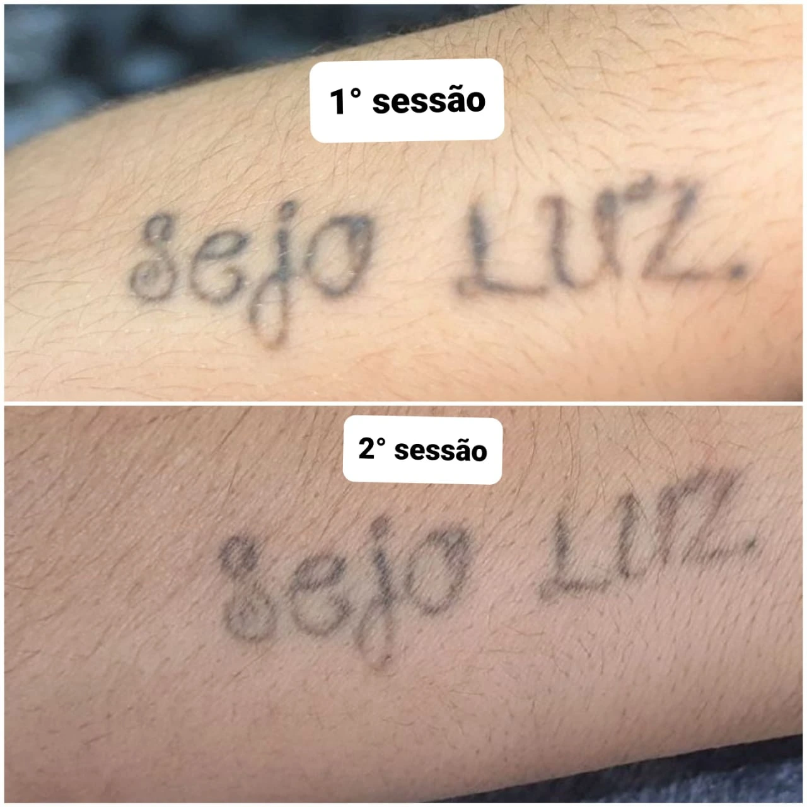
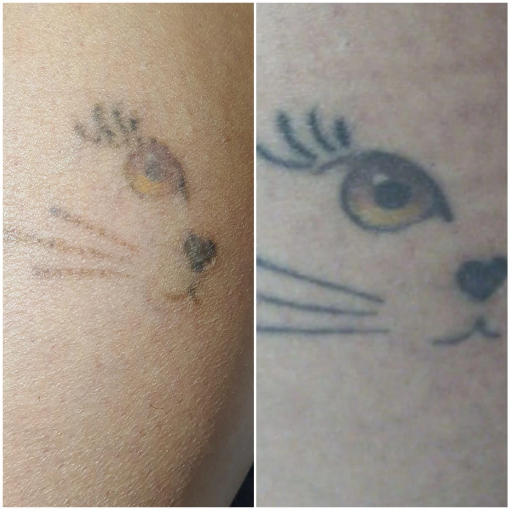
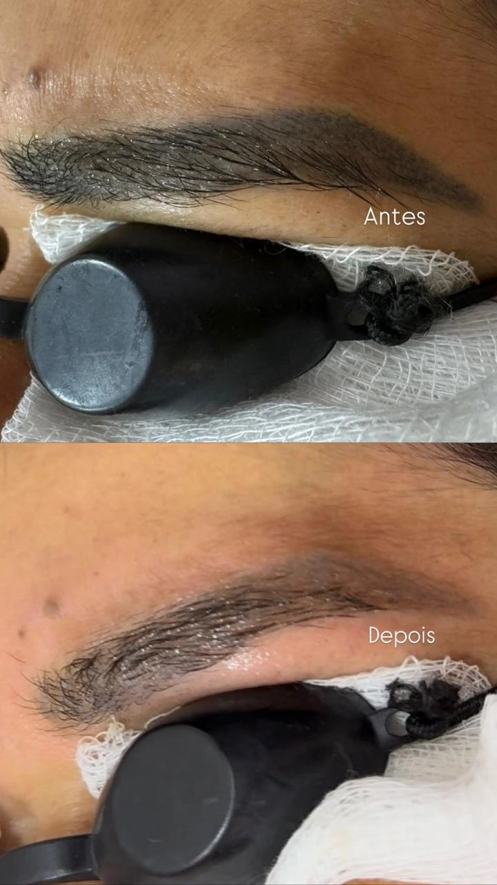
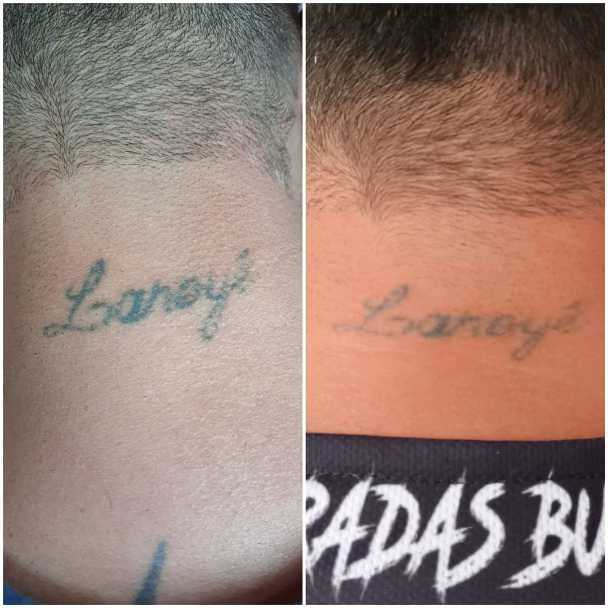

Análise das características da pigmentação e da região tratada.
Remoção de tatuagem e micropigmentação em São Paulo
Sua pele pode contar uma nova história.
Tratamentos planejados de forma individual para remover ou clarear pigmentos indesejados, respeitando as características e a resposta da sua pele.
- Avaliação individual
- Atendimento com hora marcada
- Português e espanhol
Cuidado em cada sessão
Remover também é uma forma de cuidar.
Cada pigmentação possui características diferentes. Cor, profundidade, região do corpo, tempo da tatuagem e resposta da pele influenciam diretamente no tratamento.
Por isso, o primeiro passo é sempre uma avaliação individual para entender o seu caso e alinhar expectativas de maneira responsável.
O tratamento é definido conforme as necessidades de cada caso.
Orientações antes e depois das sessões para acompanhar a evolução.
Evoluções reais
Resultados que aparecem com o tempo.
A remoção é um processo gradual. Cada organismo responde de maneira diferente e o resultado depende de diversos fatores individuais.

Remoção
Tatuagem preta

Antes Evolução
Remoção
Tatuagem colorida

Despigmentação
Micropigmentação

Antes Evolução
Clareamento
Preparação para cobertura
Tratamentos
Um procedimento para cada necessidade.
A indicação depende de uma avaliação prévia e das características do pigmento que será tratado.
Remoção de tatuagem
Tratamento gradual para reduzir ou remover pigmentos de tatuagens pretas, coloridas ou antigas.
Solicitar avaliaçãoRemoção de micropigmentação
Despigmentação de sobrancelhas e outras regiões com pigmentos que já não correspondem ao resultado desejado.
Solicitar avaliaçãoClareamento para cobertura
Redução da intensidade do pigmento para facilitar um futuro trabalho de cobertura.
Entender o processoComo funciona
O primeiro passo é entender a sua pele.
O número de sessões e a evolução do tratamento variam conforme as características do pigmento e a resposta individual do organismo.
Falar com o atendimento-
01
Envio da foto
Envie uma foto nítida da tatuagem ou micropigmentação pelo WhatsApp.
-
02
Avaliação
Analisamos tamanho, região, cores, profundidade aparente e tempo da pigmentação.
-
03
Plano de tratamento
Explicamos as possibilidades do caso e orientamos sobre as próximas etapas.
-
04
Sessões e acompanhamento
A evolução é acompanhada ao longo das sessões, respeitando o tempo de recuperação da pele.
TRATAMENTOS ESPECIALIZADOS
Cuidado individual para cada tipo de pigmento.
Cada pele possui características próprias. Por isso, todos os tratamentos começam com uma avaliação individual.
REMOÇÃO A LASER
Remoção de tatuagem
Durante a remoção, a preservação e a recuperação da pele são fatores fundamentais. O tratamento é planejado de acordo com as cores, profundidade, densidade e características de cada tatuagem.
O objetivo é promover um clareamento gradual e uniforme, respeitando o tempo de resposta do organismo e o intervalo necessário entre as sessões.
Saiba mais sobre o tratamento
MICROPIGMENTAÇÃO
Despigmentação de sobrancelhas
Sobrancelhas muito marcadas ou pigmentos que mudaram de cor podem deixar de combinar com a sua expressão atual. A remoção de micropigmentação ajuda a recuperar um resultado mais leve e natural.
Cada procedimento é conduzido com atenção às características do pigmento e da pele, buscando devolver equilíbrio ao olhar e abrir espaço para uma nova micropigmentação, quando desejado.
Saiba mais sobre o tratamento
LASER PARA FUNGOS
Tratamento de onicomicose
A onicomicose é a infecção causada por fungos nas unhas, que pode deixá-las amareladas, espessas ou quebradiças. O laser atua de forma gradual sobre a área afetada.
A quantidade de sessões varia conforme o grau de comprometimento da unha, e a evolução é acompanhada a cada etapa do tratamento.
Saiba mais sobre o tratamentoA indicação, a quantidade de sessões e os resultados variam conforme o pigmento, a região tratada e a resposta individual da pele.
Quem já passou pela avaliação
O que dizem no Google.
Avaliações reais de clientes, exibidas diretamente do perfil da La Morocha Tattoo no Google.
Carregando avaliações do Google…
Sua pele em boas mãos
Atendimento próximo, transparente e individual.
Na La Morocha, cada caso é tratado de forma particular. O objetivo é orientar com clareza, alinhar expectativas e acompanhar a evolução da pele durante todo o processo.
O atendimento é realizado com hora marcada em São Paulo e pode ser feito em português ou espanhol.
Atendimento
Com hora marcada
Idiomas
Português e espanhol
Localização
São Paulo, SP
Dúvidas frequentes
Antes de começar.
Solicite uma avaliação
Envie uma foto da sua tatuagem ou micropigmentação.
O primeiro contato pode ser feito pelo WhatsApp. Envie uma foto nítida, informe o tamanho aproximado e a região do corpo.
Enviar foto pelo WhatsApp
Atendimento com hora marcada · São Paulo, SP